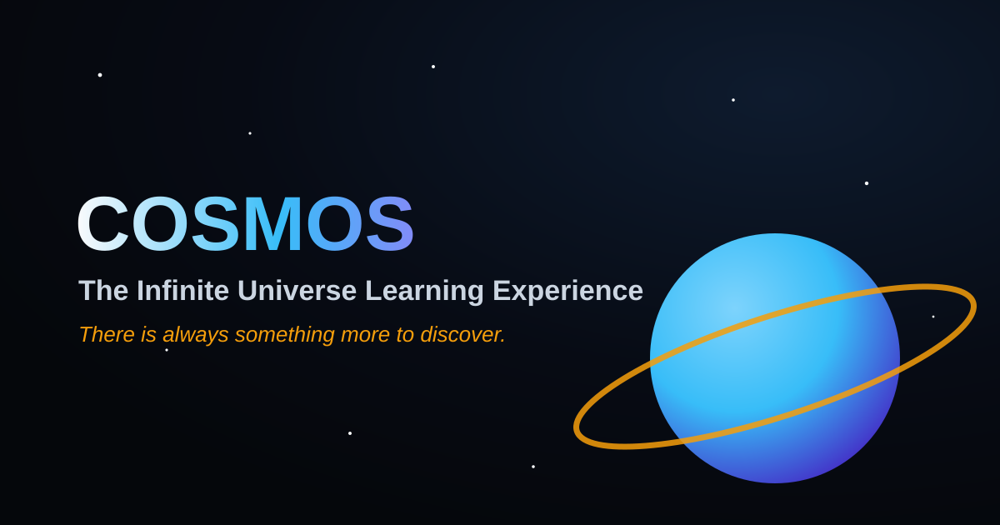

Neptune — the windy, deep-blue outermost ice giant. Lessons
Daily Discovery
NASA Astronomy Picture of the Day
A fresh window into deep space, refreshed every day straight from NASA's public archive.

Today
Loading today's cosmic view…
We are fetching the latest Astronomy Picture of the Day from NASA. If the connection is offline or rate-limited, a curated highlight about our Milky Way will appear here instead.
Featured Worlds
Interactive Celestial Cards
Move your pointer across each card for a subtle 3D tilt, then follow the link to study that world in depth.
The Sun
A 4.6-billion-year-old G-type star holding 99.8% of the Solar System's mass and fusing 600 million tonnes of hydrogen every second.
Magic fact: Light leaving the Sun's core can take 100,000 years to reach its surface.